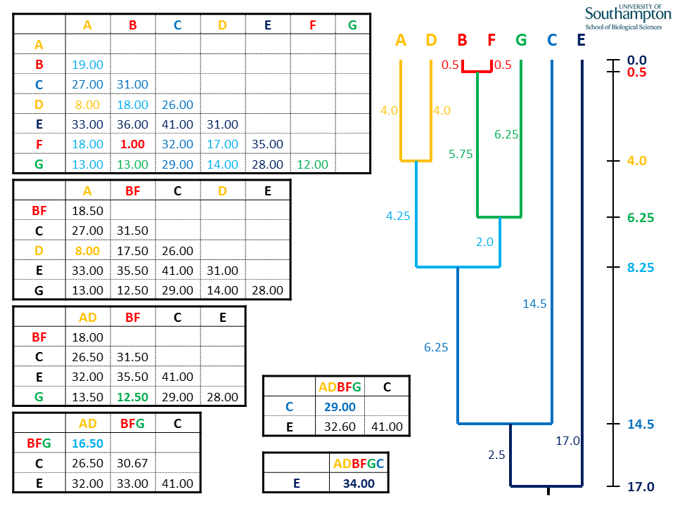

Inferencia filogenética y árboles#
Un árbol filogenético es la representación de una hipótesis de relaciones ancestrales. En esta representación, las especies o secuencias de interés estan en las puntas (tips) de las ramas. El nodo donde se unen las ramas representa el ancestro común. El tiempo por lo tanto va desde el ancestro común hacia las puntas, en la siguiente figura el tiempo sería el eje horizontal x
Inferencia Filogenética#
El cálculo de las distancias y el orden de agrupamiento es la fuente para realizar una inferencia filogenética. Primero se utilizan métodos de agrupamiento (cluster) basados en una matriz de distancia. Esta matriz es calculada a partir de una medida de similitud (por ejemplo entre morfologías o un alineamiento). Este primer agrupamiento no agarantizan una solución óptima, así que en segundo lugar se busca el mejor árbol. Vamos a ver aquí dos métodos: el de parsimonia y el d maximum likelihood. Los ejemplos en R han sido tomados del siguiente tutorial: https://rpubs.com/mvillalobos/L01_Phylogeny.
Vamos a ver primero como generar un árbol a partir de distancias y luego volveremos al cálculo de la matriz de distancia apartir de un alineamiento
Matriz de distancia#
La matriz de distancia, d es simétrica ya que la distancia de i a j es igual que la de j a i y puede ser calculada con diferentes métodos. Por ejemplo d puede ser el número de diferencias morfológicas o posiciones que no hacen match.
La matriz de distancia es el input para los algoritmos de agrupamiento (clustering). Estos funcionan en general de la siguiente forma:
Se agrupan los dos clusters mas cercanos para formar un cluster mayor
Se recalculan las distancias entre todos los clusters y el “nuevo” cluster.
Se repiten los pasos anteriores hasta que todas las secuencias se han unido a un cluster
Dos algoritmos ampliamente usados son UPGMA y Neighbor-Joining
# Load the 'Biostrings' package.
# 'Biostrings' provides efficient containers to handle and analyze biological sequences.
library("Biostrings")
# Si no lo ha hecho, instale phangorn:
#install.packages("phangorn")
library(phangorn)
# Vamos a crear la matriz de distancia D de la figura entre 5 especies o secuencias
D <- matrix(c(0,12,12,12,12,
12,0,4,6,6,
12,4,0,6,6,
12,6,6,0,2,
12,6,6,2,0), byrow = TRUE, ncol = 5)
# Esta forma de escribirlo le dice a R que distribuya el vector de secuencias
# por hileras "byrow=T y en 5 columnas "ncol=5""
# Esta matriz representa la distancia por pares entre
# un vector en las columnas y uno en las hileras
D
# Le damos los nombres a las hileras
rownames(D) <- c("a","b","c","d","e")
UPGMA: Unweighted Pair Group Method with Arithmetic mean#
El método UPGMA es un ejemplo de cluster jerárquico. La distancia entre dos clusters se calcula con la media de las distancias entre cada punto del primer cluster al segundo cluster
En el siguiente link puede encontrar un ejemplo paso a paso para construir el siguiente agrupamiento: http://www.slimsuite.unsw.edu.au/teaching/upgma/
# Ahora vamos a agrupar los elemento
UPGMA <- upgma(as.dist(D))
# Y graficamos el cluster
plot(UPGMA)
NJ: Neighbour Joining#
Mientras que en un árbol realizado con UPGMA todos los puntos están alineados y las ramas tienen la misma distancia (porque las distancias se calculan por la media), en NJ se calcula la “distancia acumulada” para cada secuencia i (A-E), \(U_i = Σ d_{ij}\). Usando esta distancia acumulada Ui, se calcula una matriz de distancia \(e_{ij}\) (para cada par de de secuencias i ay j), de acuerdo a la fórmula
\(e_{ij}\) = \(d_{ij}\)– \(\frac{U_i + U_j}{N – 2}\)
# Calculamos el agrupamiento con NJ
NJ <- NJ(as.dist(D))
# Y graficamos el árbol
plot(NJ)
Matriz de distancia entre secuencias#
Para un grupo de secuencias, la distancia se puede calular apartir del alineamiento. Esta distancia es una medida cuantitativa de la divergencia entre secuencias, y para algunas secuencias (aquellas en las que las tasas de evolución son aproximadamente similares), sirve como estimación del tiempo que ha pasado entre esta divergencia (llamado el reloj molecular).
Para comenzar, realizamos el alineamiento entre secuencias
# Load the 'Biostrings' package.
# 'Biostrings' provides efficient containers to handle and analyze biological sequences.
library("Biostrings")
# Load the phangorn library: Provides tools for phylogenetic reconstruction and analysis
library("phangorn")
# Load the ape library: Essential for reading, writing, and manipulating phylogenetic trees
library("ape")
# Define un vector que contiene 4 secuencias
sequences = c("ACTGGCTG", "ACTGCTG", "AGTGACT", "TGTGACTGA")
# Convy]ierte el vector de secuencias en un objeto DNAStringSet usando Biostrings
biostrings_sequences = DNAStringSet(sequences)
# Realiza un alineamiento múltiple sobre el objeto DNAStringSet usando 'msa'
msa_result_sample = msa(biostrings_sequences,method = "ClustalW")
# Observe el resultado del alineamiento
print(msa_result_sample)
# Y otro ejemplo con amino ácidos con diferentes longitudes
# y usando la matríz de sustitución Blosum
amino_sequences = c("ARNDCLTQ", "ARN", "ARMDCQK", "RRRTDGPSW")
amino_sequences = AAStringSet(amino_sequences)
# Realiza la alineación múltiple de las secuencias de aminoácidos.
# El argumento 'type' se establece en "protein" para indicar que estamos trabajando con secuencias de proteínas.
amino_sequences_aln = amino_sequences_aln = msa(amino_sequences, type = "protein",substitutionMatrix = BLOSUM62)
print(amino_sequences_aln)
A partir del alineamiento obtenemos las distancias por pares. Para obtener estas distancias debemos crear un objeto “phyDat”. Con este objeto podemos calcular las distancias por pares, bajo los supuesto de algún modelo de evolución. En este caso utilizaremos el “Jukes-Cantor” que asume frecuencias de bases iguales e igual probabilidad para todas la sustituciones.
# Define un vector que containing four DNA sequences
# Convert the multiple sequence alignment result to a phyDat object for downstream analyses in phangorn
phyDat_msa_sample = as.phyDat(msa_result_sample)
# Se asignan nombres a las secuencias
names(phyDat_msa_sample) = c("Seq 1", "Seq 2", "Seq 3", "Seq 4")
#calculamos la distancia con el modelo JC69
msa_sample.dist <- dist.ml(phyDat_msa_sample, model="JC69")
Ahora agrupamos las secuencias con los dos métodos que hemos descrito aquí, UPGMA y NJ, y graficamos el árbol
# Agrupamiento de secuencias con UPGMA
msa_sample_UPGMA <- upgma(msa_sample.dist)
plot(msa_sample_UPGMA )
#Agrupamiento con NJ
msa_sample_NJ <- NJ(msa_sample.dist)
plot(msa_sample_NJ)
También es posible importar un árbol realizado para graficarlo desde R. Esto se hace con frecuencia, ya que si bien R tiene la fortaleza de graficar, es mas lento y menos eficiente para realizar los alinieamientos y cálculos de distancias. A continuación vamos a importar el alineamiento de las secuencias de proteína de Citocromo B que habíamos generado con clustal (archivo .phy). A partir de este archivo vamos a:
Calcular las distancias por pares usando un modelo evolutivo (p.ej JC69)
Aplicar los algoritmos de agrupamiento
Graficar el árbol
cytB <- read.aa("CytBProt.phy")
cytB_phy_dat <- as.phyDat(cytB)
cytB_dist <- dist.ml(cytB_phy_dat)
cytB_UPGMA <- upgma(cytB_dist)
cytB_NJ <- NJ(cytB_dist)
plot(cytB_UPGMA)
plot(cytB_NJ)